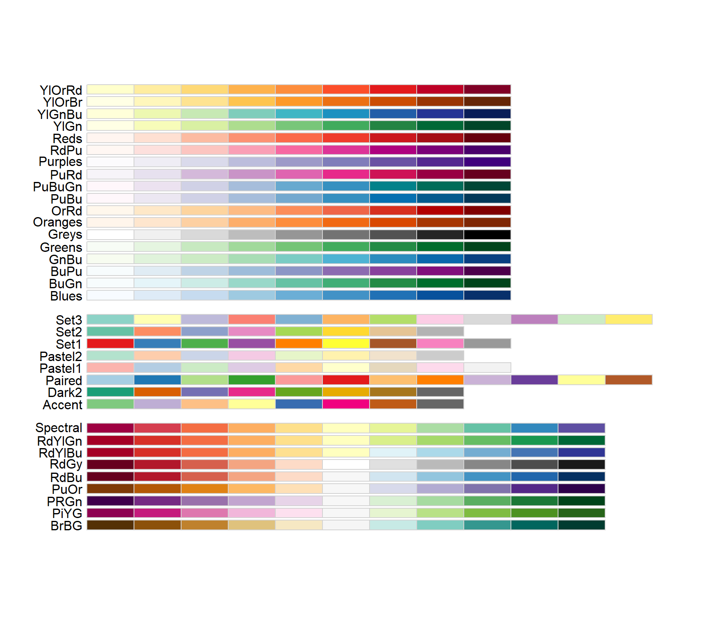
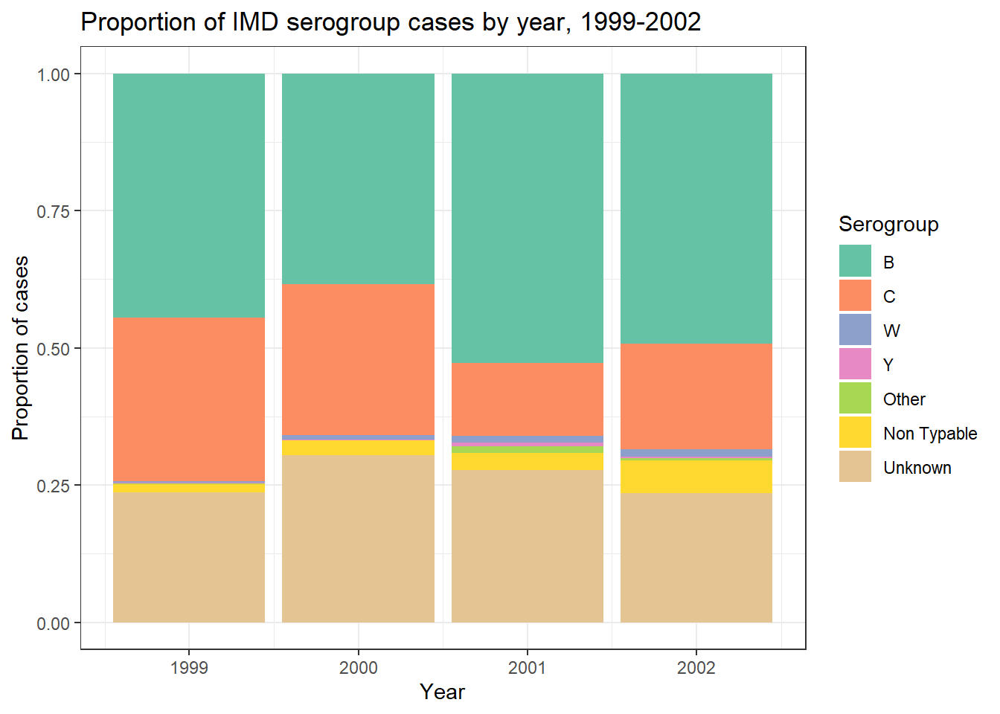

Barplots - elemental count
Session 5 practical exercises
Time to prepare the graphs for Kassandra’s report. Now you have an understanding of all the essential aspects of ggplot, so let’s put it into practice. You decide to start with one request that seems simple enough: the number of cases per serogroup. The bottom question is: have they changed across the study period?
We will answer that with one of the simplest graphs: the bar chart. It is also one of the easiest to get wrong, even after seeing thousands of them.
Continue in your Session 5 script, where your data and libraries are already loaded.
Part 5 · Counting alone vs. counting together
Letting R count for you
geom_bar() does something all of yesterday’s geometries did: it counts for you. Give it a single categorical variable and it tallies the rows in each category on its own — no count(), no tabyl(), nothing pre-cooked.
Action — Build a bar chart of serogroup alone: x = serogroup. What about y?
Action — Do we need to filter away any of the categories? Why?
It works. Bars, heights, done. Now try something that feels reasonable: since you already know both axes can be mapped, why not add a y too?
Action — Add y = age_group to the same aes() and run it.
You should get an error, something along the lines of stat_count() must only have an x or y aesthetic. Read it again slowly. R is not confused about your data — it is telling you something specific: geom_bar() computes its own y internally (the count), so giving it a y of your own is a contradiction. You are asking it to count and to plot a value at the same time, on the same axis.
NoteR being honest with you
This error is not a bug you tripped over. It is geom_bar() doing exactly what it is designed to do: refuse a y aesthetic, because computing that y is its entire job. Keep this distinction in your head — you will need it in a few lines.
When the counting is already done
Sometimes you do not want R to count — you already have the numbers, from a tabyl(), a count(), or a table you built yesterday. For that, geom_bar() is the wrong tool. You need geom_col(), which expects a y you supply yourself.
Action — Get the number of cases by serogroup using count() and then pipe it to ggplot(). Map serogroup to the x axis, and think about the y variable, since geom_col() is expecting a count variable indicating the bar height.
Same bars as your first plot, same heights — but arrived at from opposite directions. One counts inside the plot; the other counts before the plot even starts.
ImportantYou won’t remember
The moment you need a bar chart again, you won’t remember which of the two geometries do the counting and which one requires the number already. Don’t worry. People that have been coding R for years don’t remember, either. We just look at the help page or make a try and if the error pops out, we just switch to the other.
Part 6 · Choosing an honest palette
The default grey bars are not doing your report any favour. We can give each of them a color, but the ggplot defaults are not the prettiest. Also, R does not understand about the nature of data, a key part of choosing a color palette.
ColorBrewer
RColorBrewer and viridis both ship inside ggplot2 already — nothing new to install. Both offer several families of palettes, and the family you pick should depend on what kind of variable you are coloring:
- Qualitative palettes (no inherent order) — for categories like
serogroup, where B is not “more” or “less” than C. - Sequential palettes (light to dark) — for ordered categories like
age_group, where the order itself carries meaning. - Diverging palettes (center to opposite extremes) — for situations where you have a central “neutral value” that then can go to one direction or another, like ranges from -1 to +1 with a 0 in between (correlations) or relative risk/odds ratios with 1 as the null value.
We can see the palettes included in ColorBrewer typing RColorBrewer::display.brewer.all() (and installing the library before, of course):
TipSee all palettes
Let’s color the bars like we did in the previous exercise. Bar/Cols are however different from points in terms of the aesthetic for color which shifts to fill
Action — Add color to the bars from the same serogroupvariable and execute to see the result.
Action — Now incorporate the scale to modify the fill with the brewer palette (here the auto-complete will be showing you all available functions as you write the name). We are interested in two arguments: palette and guide.
Action — Choose a palette! Use the image above and the help page of the scale function to navigate the qualitative section.
Action — Don’t forget your theme() (I chose bw this time)
CautionWhy this matters more than it looks
A sequential palette on an unordered variable silently tells your reader that one category is “more” of something than another — B does not outrank C in here. In surveillance reporting, a poorly chosen palette does not just look wrong, it can quietly misinform. This is also why the colorblind-safe filter is not optional politeness: a meaningful share of any audience cannot reliably distinguish red from green, and a palette that only works for some readers is not a finished graph.
Action — Now repeat the exercise for age_group: create your barplot with the geom you prefer, map fill = age_group, and choose a sequential palette from scale_fill_brewer(), with the same arguments as before.
Viridis
If you want an alternative to Brewer, viridis palettes (scale_fill_viridis_d() for discrete data) are colorblind-safe by design across the whole family, qualitative or sequential. You can learn more about the science behind them in their official page.

Part 7 · Proportions across four seasons
Kassandra’s report is meant to set a baseline across 1999–2002. A raw count of cases per serogroup per year answers “how many” — but “has the mix of serogroups shifted across those four seasons” is arguably the more interesting baseline question, and it needs proportions, not counts.
Turns out, counting is not the only thing geom_bar() can do for you. It can transform raw counts into proportions shifting the bar to show the height according to cases, to equally high bars amounting to 100% and enabling direct comparison between bars.
For that we will make use of the argument position = "fill", inside the geometry:
Action — Build a bar chart with x = year and fill = serogroup, using plain geom_bar() with position = "fill". No count() needed this time — geom_bar() is doing the counting, position = "fill" is turning those counts into proportions within each bar. Retain the scale, chosen palette and theme from before.
Action — How about the legend of serogroups? Would you keep it or not? Why?
Action — Because this is the final plot we will export and send to Kassandra, let’s add labs() to improve x, y, fill names and add a title = "your title".
Action — Assign the plot to an object, then save it following the ggsave() framework.
Final plot

Exercise Summary
Two geometries that look almost identical but expect opposite things from you: geom_bar() counts on its own and refuses a y, geom_col() demands a y you already prepared. You also made your first deliberate palette choices — qualitative for an unordered category, sequential for an ordered one — and closed with a proportions chart that turns four seasons of raw counts into a single, comparable picture.
In the next exercise, the x axis stops being a handful of categories and becomes a full timeline.
| Function | Package | What it does |
|---|---|---|
geom_bar() |
ggplot2 | Counts rows per category itself; only accepts x (or y, never both) |
geom_col() |
ggplot2 | Plots a y you already computed; needs pre-summarised data |
fill |
ggplot2 | Aesthetic for the interior color of bars and other filled geometries |
scale_fill_brewer() |
ggplot2 (RColorBrewer) | Applies a Brewer palette family — qualitative, sequential or diverging |
scale_fill_viridis_d() |
ggplot2 (viridis) | Colorblind-safe discrete palette, alternative to Brewer |
position = "fill" |
ggplot2 | Turns stacked counts into proportions within each bar |
Tip💡 Show solution — only after trying yourself!
# Load libraries
library(pacman)
p_load(rio, here, tidyverse)
# Import data
imd <- import(here("data", "clean", "IMD_Sample_Clean.rds"))
# geom_bar() counts alone
imd %>%
ggplot(aes(
x = serogroup
)) +
geom_bar()
# The error: geom_bar() refuses a y
imd %>%
ggplot(aes(
x = serogroup,
y = age_years
)) +
geom_bar()
# geom_col() needs pre-summarised data
imd %>%
count(serogroup) %>%
ggplot(aes(
x = serogroup,
y = n
)) +
geom_col()
# Qualitative palette for serogroup (unordered)
imd %>%
count(serogroup) %>%
ggplot(aes(
x = serogroup,
y = n,
fill = serogroup
)) +
geom_col() +
scale_fill_brewer(
palette = "Set2",
guide = "none"
) +
theme_bw()
# Sequential palette for age_group (ordered)
imd %>%
filter(age_group != "Unknown") %>%
count(age_group) %>%
ggplot(aes(
x = age_group,
y = n,
fill = age_group
)) +
geom_col() +
scale_fill_brewer(
palette = "Blues",
guide = "none"
) +
theme_bw()
# Final plot: proportions of serogroup across four seasons
serogroup_by_year <- imd %>%
ggplot(aes(
x = year,
fill = serogroup
)) +
geom_bar(position = "fill") +
scale_fill_brewer(palette = "Set2") +
labs(
x = "Year",
y = "Proportion of cases",
fill = "Serogroup",
title = "Proportion of IMD serogroup cases by year, 1999-2022"
) +
theme_bw()
serogroup_by_year
ggsave(
plot = serogroup_by_year,
filename = "serogroup_by_year.png",
path = here("output"),
units = "in",
width = 7,
height = 5,
dpi = 300
)